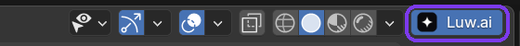
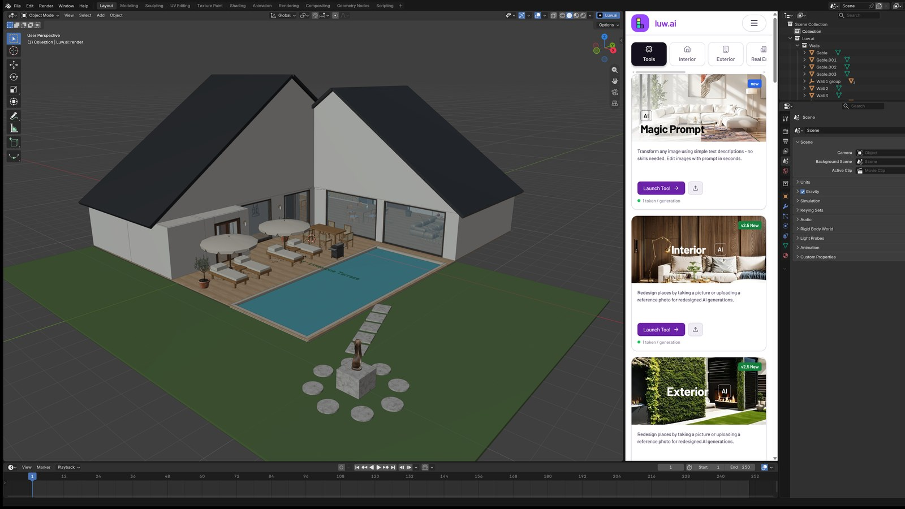
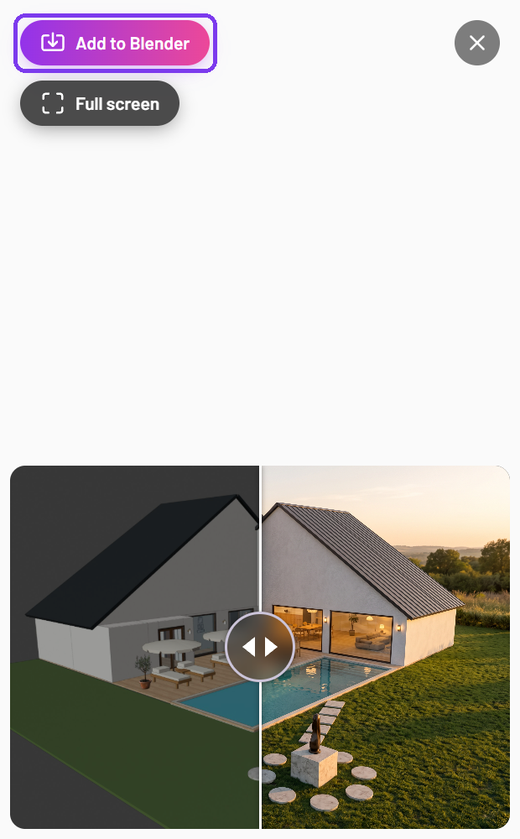
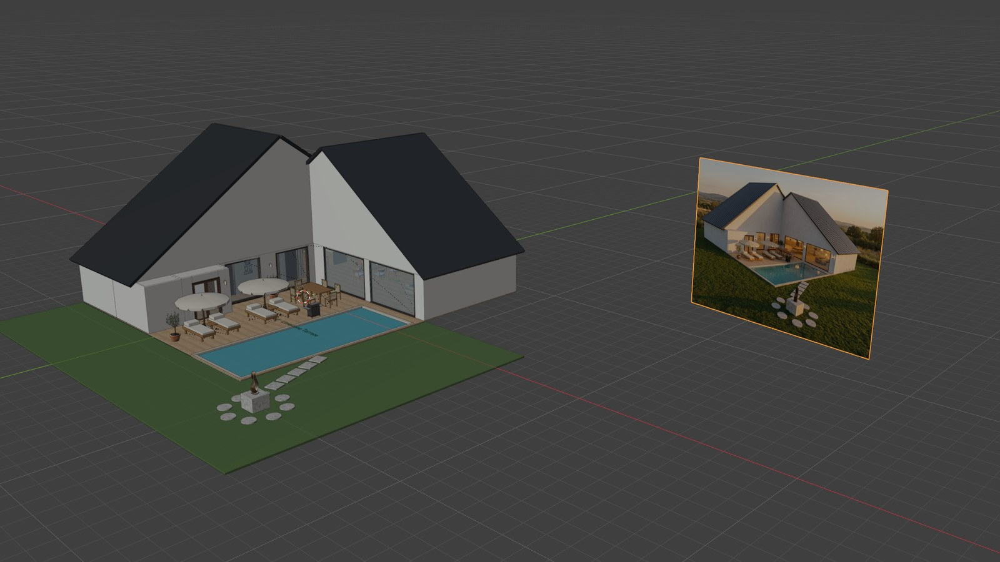
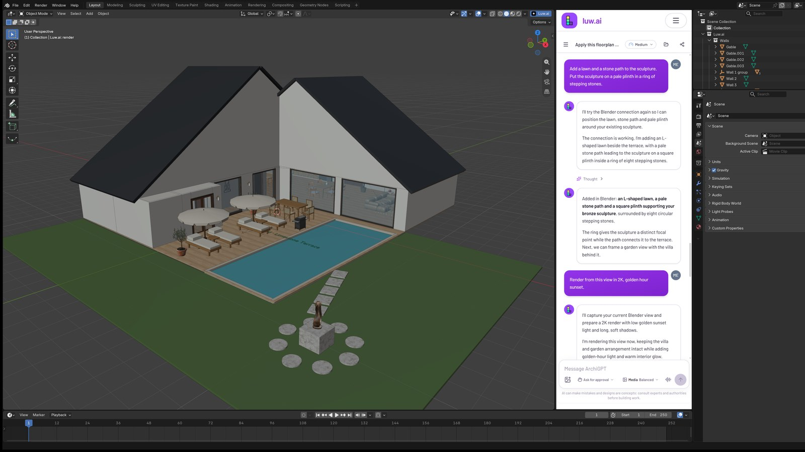
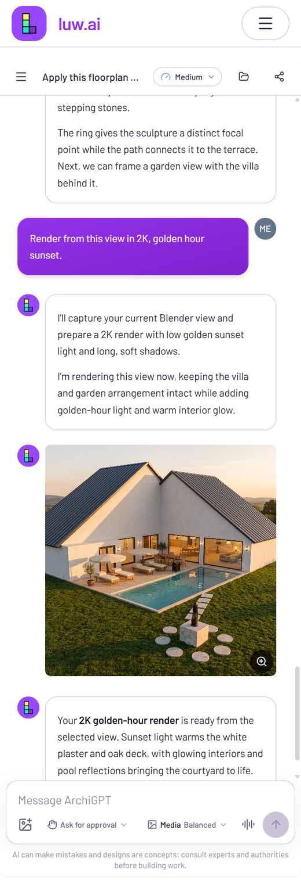

Luw.ai for Blender
Design a building by talking to ArchiGPT and watch it appear in your Blender scene. Then render it, right inside Blender. No export, no extra app.
What you need
- Blender 4.2 or later on Windows 10 or 11, 64-bit. Tested on Blender 4.2 LTS and 5.2 LTS.
- A Luw.ai account. Each render uses tokens from your account: 1 token for one image.
- An internet connection. The renders are made on Luw.ai's servers.
- Microsoft Edge WebView2 Runtime. Windows 10 and 11 usually have it already.
- The Luw.ai extension:
Luw.ai-Blender.zip. Download it here. Don't unzip it: Blender installs the zip file itself.
Install the extension
- In Blender, choose Edit › Preferences and click Get Extensions.
- Click the ⌄ menu at the top right and choose Install from Disk…
- Choose the file
Luw.ai-Blender.zipyou downloaded and click Install from Disk. Luw.ai is installed and turned on.
Open Luw.ai and sign in
Click the Luw.ai button at the right of the 3D Viewport's header. Or choose Window › Luw.ai in Blender's menu bar, or View › Luw.ai in the 3D Viewport.

The Luw.ai panel docks at the right of the 3D Viewport, as an area of its own. It is the Luw.ai web app, made to work with Blender. Drag the edge between the panel and the viewport to make it wider or narrower. Click the same button again to close it; it opens again as you left it. A file saved with the panel open opens with it.

Get your first render
-
Set up your view. Frame the 3D Viewport until you like the picture. What you see is what Luw.ai renders, without the grid, gizmos or overlays, in the viewport's shading.
Tip: Material Preview or Solid shading with colors or materials gives better renders than a wireframe view.
- Click Render AI on the panel's home page: your Blender view is already in it. You don't need to save or export anything. Moved the camera? Click Capture Blender view on the picture to take the new view.
- Choose options if you like: Time of Day, Lighting, or a short Prompt such as “golden hour, warm light on the deck”. Or leave them on Auto.
- Click Generate Image with AI. One image uses 1 token. Your render is ready in about a minute. Click it to open it.
-
Compare and keep it. Drag the slider to compare the render with your view, then click Add to Blender at the top left.

-
That's it. The render is now in your scene: a picture standing upright beside your model, on the right as you look at it, facing the camera, in the Luw.ai › Renders collection. The picture is packed into your .blend file. To remove it, press Ctrl+Z once.

Your model and its render, side by side in Blender.
More tools
Open the menu (☰) at the top of the panel for more tools, such as interiors, exteriors, sketch to render and video. Most tools start with your Blender view. With 3DGen AI you get a 3D model, and Add to Blender brings it into your scene with Blender's own glTF importer: beside your model on the right as you look at it, standing on the ground, its front to the camera, 1 m on its largest side, in the Luw.ai › Models collection. One Ctrl+Z removes it.
Design a building with ArchiGPT
ArchiGPT is Luw.ai's design assistant. In Blender it builds what you describe straight into your scene, as ordinary Blender objects in their own collections under Luw.ai, while you watch.
- Open ArchiGPT from the home page of the Luw.ai panel.
-
Say what you want. Describe the building, or attach a photo of a plan you drew on paper and write something like “Apply this floorplan as a villa.” ArchiGPT builds it in Blender: walls, rooms, doors and windows, the kitchen, furniture, a pool. Each kind has its collection in Luw.ai: Walls, Slabs, Ceilings, Roof, Doors, Windows, Glass, Stairs, Columns, Fences, Rooms and Furniture.

The house in Blender, and the conversation that built it. - Change it by talking. “Give it a 35° gable roof”, “add a barbecue corner by the pool”, “lay out the sunbeds like this photo”. Only what changed is rebuilt. Select something in Blender first and ArchiGPT knows what “this” means. It knows your own objects too: “move the cube I made 2 m east”, “what else is in the scene?” Ask it to copy, rotate, scale, hide or lock objects, join or cut solids, measure (“how long is this wall?”), cut a section (“cut the view at 1.2 m”), set the sun (“sun for 21 June at 17:00 in Istanbul”) or save the view.
- Change it yourself, too. Move, rotate, scale or delete what ArchiGPT built, or add objects of your own, whenever you like. Your changes stay when ArchiGPT builds again.
- Add materials. “Light oak floors, white plaster walls, a dark grey metal roof.” ArchiGPT puts real materials on the model, and can have Pattern AI make a texture just for it. The textures are packed into your .blend file.
- Add what no library has. “A bronze sculpture by the pool.” ArchiGPT designs it, 3DGen AI makes it a real 3D model, and it lands in your scene.
-
Render it. Frame a view in Blender and ask for a render, or ask ArchiGPT to go into every room and render each one in 4K. It shows what it will cost and waits for your Approve. Click a result to see it full size in a large window over Blender (Esc closes it), or put it in your scene with Add to Blender.

Help
- I don't see the Luw.ai button.
- Choose Edit › Preferences › Add-ons and check that Luw.ai is there and turned on. If it is not, install it again from
Luw.ai-Blender.zip. The button is in the header of the 3D Viewport; Window › Luw.ai works everywhere. - The panel is empty or doesn't load.
- Luw.ai needs the internet and the Microsoft Edge WebView2 Runtime. Check your connection, install the WebView2 Runtime if the panel says it is missing, then close the panel and open it again.
- The picture in the panel is an old view.
- Click Capture Blender view on the picture.
- Blender's shortcuts don't work.
- They are off while you type in the panel. Click in the 3D Viewport, and they work again.
- ArchiGPT says Blender is busy.
- Luw.ai changes the scene in Object Mode only. Press Tab to leave Edit Mode, or finish the tool you are using, and ArchiGPT goes on.
- Something went wrong.
- Send us the file
%LOCALAPPDATA%\Luw.ai\logs\plugin.log. - How do I remove the extension?
- Choose Edit › Preferences › Add-ons, open Luw.ai and click Uninstall. What Luw.ai added to your scenes stays.